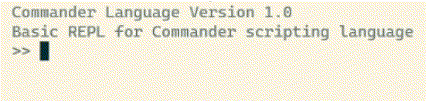

What is Commander?
Commander is powerful scripting language that helps you automate
the command-line, manipulate data, and control your system using
friendlier syntax than other scripting languages, like Bash or
PowerShell. The interpreter includes a shell-like environment
called a REPL (Read Evaluate Print Loop), Bash/PowerShell
transiplers, and the ability to run Commander files.

The language grammar itself ...
Compared To Similar Languages
Commander has better ...
Project Archeticture
Source -> ...